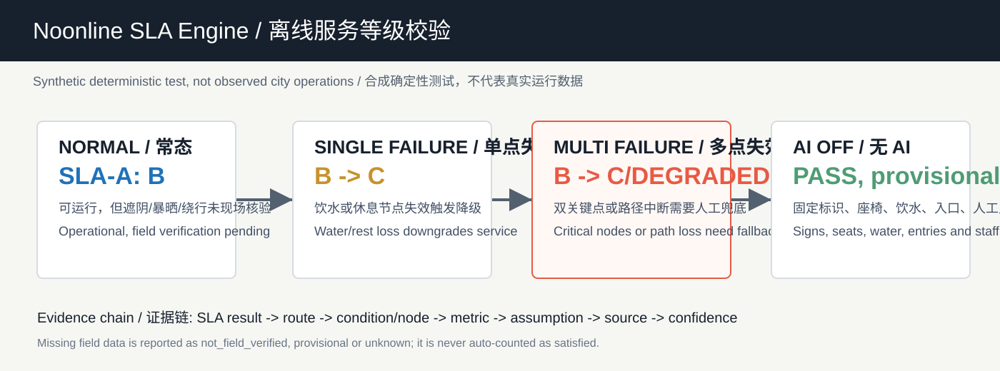

Overview Map
Core Metrics
Three-Level Scope
SLA-A
Target A / Verified B: main-spine shade, sit-able rest, water and staffed fallback still need field verification.
SLA-B
Transverse access limits summer detour and adds crossing waiting plus public entries.
SLA-C
Station touchpoints rely on fixed wayfinding, accessible notices, seats, water and staffed enquiry.
Key Areas / Land-Use Partition
The north section supports R&D validation, the middle section hosts the origin display and public living room, and the south section supports business, consumption and visitor service. Four conceptual land-use partitions support midday research, blue-green stay, campus-park links and daily-service renewal.
Transport and Slow Mobility / Blue-Green Public Space
The three path types share the existing ROAD-001 spine and drawing layer without adding road geometry. SLA is an observable spatial-condition checklist, not a phone-navigation score. Provisional boundaries are background constraints only, not official redlines.
AI OFF / No Phone / No Screen
Fixed signs, visible routes, seats, water, public entries and the five staffed fallback points work independently. A person can complete a midday trip, rest and enquiry without using AI, a phone or a screen.
Noonline SLA Engine / Offline Check

Synthetic offline test, not real city operation data. The engine checks declared evidence only.
Buildings / Renewal Projects
The building strategy is interface renewal first, stock activation first and demolition conclusions later; phasing starts with temporary wayfinding, seating, shade and staffed tables, then moves to scenario validation and professional deepening.
AI Scenarios
Midday comfort navigation Lab visitor arrival Accessible slow-route review Low-speed robot window Event-day guidance levelsTask Coverage
Covers official tasks 1.3, 1.4, 1.5 and agent.1 to agent.6: naming, global cases, ten scenario cards, three validation scenarios, five personas, four pilgrimage/honor nodes, cultural narrative and long-term operation.
Self-Check State
Self-check is written by the official script after local finalization; every numeric value shown here must match metrics.json.
V2 Field-Verification Checklist
This checklist is generated from the machine-readable ledger. All tasks are currently unknown and do not represent field verification of shade, water, seating, entries, crossings, detours, or staffed services.
Target SLA = A; Verified SLA = B. The 18 mandatory SLA-A evidence tasks are incomplete, so blocked. AI may not write observed, verified, or rejected states.
Expand 45 tasks
| Task | Object | Evidence required | Method | Pass / fail | Status | SLA effect |
|---|---|---|---|---|---|---|
| FV-SLA-A-SHADE-CONTINUITY-SLA-A shade continuity | SLA-A · route:SLA-A | Geolocated route-segment observation at the specified midday sampling window, including shade/solar-exposure record and attachment. | Walk the declared reference axis segment; record continuous shaded and exposed intervals with timestamped, geolocated evidence. | Observed shaded coverage meets the pre-approved route threshold for the specified sampling window. / A gap beyond the approved exposure threshold is observed, or the route cannot be observed safely. | unknown | Blocks SLA-A promotion when not verified; rejection triggers route-service review. |
| FV-SLA-A-CONTINUOUS-EXPOSURE-SLA-A continuous exposure distance | SLA-A · route:SLA-A | Timestamped, geolocated walking survey showing the longest continuously exposed interval. | Traverse the reference segment during the approved time window and measure each uninterrupted exposure interval. | The longest exposed interval is within the pre-approved maximum. / The longest exposed interval exceeds the pre-approved maximum or no reliable measurement is available. | unknown | Blocks SLA-A promotion when not verified; rejection triggers route-service review. |
| FV-SLA-A-SUMMER-DETOUR-SLA-A summer detour | SLA-A · route:SLA-A | Geolocated accessible route trace comparing the declared reference route and the actual shade/access detour. | Walk the practical accessible alternative in the approved summer sampling window; record distance and access constraints. | The measured detour is within the pre-approved threshold and preserves accessibility. / The detour exceeds the threshold, becomes inaccessible, or cannot be completed. | unknown | Blocks SLA-A promotion when not verified; rejection requires a remain-B or downgrade review. |
| FV-SLA-A-STATIC-WAYFINDING-SLA-A offline static wayfinding | SLA-A · route:SLA-A | Photographic or documented proof of fixed, legible, low-technology wayfinding covering the declared reference route. | Walk the route with AI and mobile services unavailable; document each required direction/decision point. | All required decision points have legible, durable offline guidance under the approved accessibility criteria. / A required decision point lacks legible offline guidance or requires AI/mobile access to proceed. | unknown | Blocks SLA-A promotion when not verified and affects AI-OFF support. |
| FV-SLA-A-NODE-LOCATION-N01 actual node location | SLA-A · node:N01 | Geolocated field record confirming the proposed node can be associated with a real, publicly accessible place or documenting why it cannot. | Visit the declared node context; record location, public accessibility and an attachment. | The node can be located and its context supports the declared design role without claiming an existing service facility. / The location is inaccessible, materially inconsistent with the declared role, or cannot be located. | unknown | Blocks SLA-A promotion when the node is mandatory; rejection triggers siting revision or downgrade review. |
| FV-SLA-A-NODE-LOCATION-N02 actual node location | SLA-A · node:N02 | Geolocated field record confirming the proposed node can be associated with a real, publicly accessible place or documenting why it cannot. | Visit the declared node context; record location, public accessibility and an attachment. | The node can be located and its context supports the declared design role without claiming an existing service facility. / The location is inaccessible, materially inconsistent with the declared role, or cannot be located. | unknown | Blocks SLA-A promotion when the node is mandatory; rejection triggers siting revision or downgrade review. |
| FV-SLA-A-NODE-LOCATION-N03 actual node location | SLA-A · node:N03 | Geolocated field record confirming the proposed node can be associated with a real, publicly accessible place or documenting why it cannot. | Visit the declared node context; record location, public accessibility and an attachment. | The node can be located and its context supports the declared design role without claiming an existing service facility. / The location is inaccessible, materially inconsistent with the declared role, or cannot be located. | unknown | Blocks SLA-A promotion when the node is mandatory; rejection triggers siting revision or downgrade review. |
| FV-SLA-A-NODE-LOCATION-N04 actual node location | SLA-A · node:N04 | Geolocated field record confirming the proposed node can be associated with a real, publicly accessible place or documenting why it cannot. | Visit the declared node context; record location, public accessibility and an attachment. | The node can be located and its context supports the declared design role without claiming an existing service facility. / The location is inaccessible, materially inconsistent with the declared role, or cannot be located. | unknown | Blocks SLA-A promotion when the node is mandatory; rejection triggers siting revision or downgrade review. |
| FV-SLA-A-NODE-LOCATION-N05 actual node location | SLA-A · node:N05 | Geolocated field record confirming the proposed node can be associated with a real, publicly accessible place or documenting why it cannot. | Visit the declared node context; record location, public accessibility and an attachment. | The node can be located and its context supports the declared design role without claiming an existing service facility. / The location is inaccessible, materially inconsistent with the declared role, or cannot be located. | unknown | Blocks SLA-A promotion when the node is mandatory; rejection triggers siting revision or downgrade review. |
| FV-SLA-A-NODE-LOCATION-N06 actual node location | SLA-A · node:N06 | Geolocated field record confirming the proposed node can be associated with a real, publicly accessible place or documenting why it cannot. | Visit the declared node context; record location, public accessibility and an attachment. | The node can be located and its context supports the declared design role without claiming an existing service facility. / The location is inaccessible, materially inconsistent with the declared role, or cannot be located. | unknown | Blocks SLA-A promotion when the node is mandatory; rejection triggers siting revision or downgrade review. |
| FV-SLA-A-REST-NODES-N02 seating and rest node | SLA-A · node:N02 | Field record of publicly usable resting provision, condition, access and operating constraint at the declared node. | Observe the node, document seating/rest provision, accessibility, condition and availability. | A usable, accessible rest opportunity is present and available under the approved service condition. / No usable rest opportunity is present, access is blocked, or condition is unsafe/unavailable. | unknown | Mandatory failures can keep the route at B or trigger downgrade review. |
| FV-SLA-A-REST-NODES-N05 seating and rest node | SLA-A · node:N05 | Field record of publicly usable resting provision, condition, access and operating constraint at the declared node. | Observe the node, document seating/rest provision, accessibility, condition and availability. | A usable, accessible rest opportunity is present and available under the approved service condition. / No usable rest opportunity is present, access is blocked, or condition is unsafe/unavailable. | unknown | Mandatory failures can keep the route at B or trigger downgrade review. |
| FV-SLA-A-WATER-NODES-N02 drinking-water node | SLA-A · node:N02 | Field record of the actual public water option, availability status, access condition and source attachment. | Visit and document the water option and its availability without inferring water quality beyond approved evidence. | A public, usable water option is accessible and available under the approved service condition. / No usable option is present, access is blocked, or the option is unavailable. | unknown | Mandatory failures can keep the route at B or trigger downgrade review. |
| FV-SLA-A-WATER-NODES-N05 drinking-water node | SLA-A · node:N05 | Field record of the actual public water option, availability status, access condition and source attachment. | Visit and document the water option and its availability without inferring water quality beyond approved evidence. | A public, usable water option is accessible and available under the approved service condition. / No usable option is present, access is blocked, or the option is unavailable. | unknown | Mandatory failures can keep the route at B or trigger downgrade review. |
| FV-SLA-A-PUBLIC-ENTRIES-N03 public-entry access condition | SLA-A · node:N03 | Timestamped access observation, including entrance identity, public-access condition and any opening constraint. | Observe the declared entry in the relevant midday period and document access and barrier-free condition. | The entry is publicly accessible during the approved service window and meets the documented access condition. / The entry is closed, restricted, inaccessible, or cannot support the declared route connection. | unknown | Mandatory failures can keep the route at B or trigger downgrade review. |
| FV-SLA-A-CROSSING-NODES-N04 critical crossing condition | SLA-A · node:N04 | Field observation of the legal crossing, waiting condition, accessibility and route continuity at the declared node. | Observe and traverse the legal crossing during the approved period; document waiting and continuity conditions. | A legal, accessible crossing maintains the declared route continuity under the approved condition. / The crossing is unsafe, inaccessible, unavailable, or breaks route continuity. | unknown | Mandatory failures can keep the route at B or trigger downgrade review. |
| FV-SLA-A-HUMAN-FALLBACK-NODES-N02 staffed human fallback | SLA-A · node:N02 | Documented responsible human role, service point, usable time window and low-technology fallback procedure. | Confirm the service role and availability through an authorized, recorded field/operational check. | A responsible human service role and usable fallback procedure are confirmed for the approved window. / No responsible role, time window, or usable fallback procedure is confirmed. | unknown | Mandatory failures can keep the route at B or trigger downgrade review; AI cannot substitute for this condition. |
| FV-SLA-A-HUMAN-FALLBACK-NODES-N05 staffed human fallback | SLA-A · node:N05 | Documented responsible human role, service point, usable time window and low-technology fallback procedure. | Confirm the service role and availability through an authorized, recorded field/operational check. | A responsible human service role and usable fallback procedure are confirmed for the approved window. / No responsible role, time window, or usable fallback procedure is confirmed. | unknown | Mandatory failures can keep the route at B or trigger downgrade review; AI cannot substitute for this condition. |
| FV-SLA-B-SHADE-CONTINUITY-SLA-B shade continuity | SLA-B · route:SLA-B | Geolocated route-segment observation at the specified midday sampling window, including shade/solar-exposure record and attachment. | Walk the declared reference axis segment; record continuous shaded and exposed intervals with timestamped, geolocated evidence. | Observed shaded coverage meets the pre-approved route threshold for the specified sampling window. / A gap beyond the approved exposure threshold is observed, or the route cannot be observed safely. | unknown | Blocks SLA-A promotion when not verified; rejection triggers route-service review. |
| FV-SLA-B-CONTINUOUS-EXPOSURE-SLA-B continuous exposure distance | SLA-B · route:SLA-B | Timestamped, geolocated walking survey showing the longest continuously exposed interval. | Traverse the reference segment during the approved time window and measure each uninterrupted exposure interval. | The longest exposed interval is within the pre-approved maximum. / The longest exposed interval exceeds the pre-approved maximum or no reliable measurement is available. | unknown | Blocks SLA-A promotion when not verified; rejection triggers route-service review. |
| FV-SLA-B-SUMMER-DETOUR-SLA-B summer detour | SLA-B · route:SLA-B | Geolocated accessible route trace comparing the declared reference route and the actual shade/access detour. | Walk the practical accessible alternative in the approved summer sampling window; record distance and access constraints. | The measured detour is within the pre-approved threshold and preserves accessibility. / The detour exceeds the threshold, becomes inaccessible, or cannot be completed. | unknown | Blocks SLA-A promotion when not verified; rejection requires a remain-B or downgrade review. |
| FV-SLA-B-STATIC-WAYFINDING-SLA-B offline static wayfinding | SLA-B · route:SLA-B | Photographic or documented proof of fixed, legible, low-technology wayfinding covering the declared reference route. | Walk the route with AI and mobile services unavailable; document each required direction/decision point. | All required decision points have legible, durable offline guidance under the approved accessibility criteria. / A required decision point lacks legible offline guidance or requires AI/mobile access to proceed. | unknown | Blocks SLA-A promotion when not verified and affects AI-OFF support. |
| FV-SLA-B-NODE-LOCATION-N07 actual node location | SLA-B · node:N07 | Geolocated field record confirming the proposed node can be associated with a real, publicly accessible place or documenting why it cannot. | Visit the declared node context; record location, public accessibility and an attachment. | The node can be located and its context supports the declared design role without claiming an existing service facility. / The location is inaccessible, materially inconsistent with the declared role, or cannot be located. | unknown | Blocks SLA-A promotion when the node is mandatory; rejection triggers siting revision or downgrade review. |
| FV-SLA-B-NODE-LOCATION-N08 actual node location | SLA-B · node:N08 | Geolocated field record confirming the proposed node can be associated with a real, publicly accessible place or documenting why it cannot. | Visit the declared node context; record location, public accessibility and an attachment. | The node can be located and its context supports the declared design role without claiming an existing service facility. / The location is inaccessible, materially inconsistent with the declared role, or cannot be located. | unknown | Blocks SLA-A promotion when the node is mandatory; rejection triggers siting revision or downgrade review. |
| FV-SLA-B-NODE-LOCATION-N09 actual node location | SLA-B · node:N09 | Geolocated field record confirming the proposed node can be associated with a real, publicly accessible place or documenting why it cannot. | Visit the declared node context; record location, public accessibility and an attachment. | The node can be located and its context supports the declared design role without claiming an existing service facility. / The location is inaccessible, materially inconsistent with the declared role, or cannot be located. | unknown | Blocks SLA-A promotion when the node is mandatory; rejection triggers siting revision or downgrade review. |
| FV-SLA-B-NODE-LOCATION-N10 actual node location | SLA-B · node:N10 | Geolocated field record confirming the proposed node can be associated with a real, publicly accessible place or documenting why it cannot. | Visit the declared node context; record location, public accessibility and an attachment. | The node can be located and its context supports the declared design role without claiming an existing service facility. / The location is inaccessible, materially inconsistent with the declared role, or cannot be located. | unknown | Blocks SLA-A promotion when the node is mandatory; rejection triggers siting revision or downgrade review. |
| FV-SLA-B-REST-NODES-N07 seating and rest node | SLA-B · node:N07 | Field record of publicly usable resting provision, condition, access and operating constraint at the declared node. | Observe the node, document seating/rest provision, accessibility, condition and availability. | A usable, accessible rest opportunity is present and available under the approved service condition. / No usable rest opportunity is present, access is blocked, or condition is unsafe/unavailable. | unknown | Mandatory failures can keep the route at B or trigger downgrade review. |
| FV-SLA-B-REST-NODES-N09 seating and rest node | SLA-B · node:N09 | Field record of publicly usable resting provision, condition, access and operating constraint at the declared node. | Observe the node, document seating/rest provision, accessibility, condition and availability. | A usable, accessible rest opportunity is present and available under the approved service condition. / No usable rest opportunity is present, access is blocked, or condition is unsafe/unavailable. | unknown | Mandatory failures can keep the route at B or trigger downgrade review. |
| FV-SLA-B-WATER-NODES-N09 drinking-water node | SLA-B · node:N09 | Field record of the actual public water option, availability status, access condition and source attachment. | Visit and document the water option and its availability without inferring water quality beyond approved evidence. | A public, usable water option is accessible and available under the approved service condition. / No usable option is present, access is blocked, or the option is unavailable. | unknown | Mandatory failures can keep the route at B or trigger downgrade review. |
| FV-SLA-B-PUBLIC-ENTRIES-N08 public-entry access condition | SLA-B · node:N08 | Timestamped access observation, including entrance identity, public-access condition and any opening constraint. | Observe the declared entry in the relevant midday period and document access and barrier-free condition. | The entry is publicly accessible during the approved service window and meets the documented access condition. / The entry is closed, restricted, inaccessible, or cannot support the declared route connection. | unknown | Mandatory failures can keep the route at B or trigger downgrade review. |
| FV-SLA-B-CROSSING-NODES-N07 critical crossing condition | SLA-B · node:N07 | Field observation of the legal crossing, waiting condition, accessibility and route continuity at the declared node. | Observe and traverse the legal crossing during the approved period; document waiting and continuity conditions. | A legal, accessible crossing maintains the declared route continuity under the approved condition. / The crossing is unsafe, inaccessible, unavailable, or breaks route continuity. | unknown | Mandatory failures can keep the route at B or trigger downgrade review. |
| FV-SLA-B-CROSSING-NODES-N10 critical crossing condition | SLA-B · node:N10 | Field observation of the legal crossing, waiting condition, accessibility and route continuity at the declared node. | Observe and traverse the legal crossing during the approved period; document waiting and continuity conditions. | A legal, accessible crossing maintains the declared route continuity under the approved condition. / The crossing is unsafe, inaccessible, unavailable, or breaks route continuity. | unknown | Mandatory failures can keep the route at B or trigger downgrade review. |
| FV-SLA-B-HUMAN-FALLBACK-NODES-N07 staffed human fallback | SLA-B · node:N07 | Documented responsible human role, service point, usable time window and low-technology fallback procedure. | Confirm the service role and availability through an authorized, recorded field/operational check. | A responsible human service role and usable fallback procedure are confirmed for the approved window. / No responsible role, time window, or usable fallback procedure is confirmed. | unknown | Mandatory failures can keep the route at B or trigger downgrade review; AI cannot substitute for this condition. |
| FV-SLA-B-HUMAN-FALLBACK-NODES-N09 staffed human fallback | SLA-B · node:N09 | Documented responsible human role, service point, usable time window and low-technology fallback procedure. | Confirm the service role and availability through an authorized, recorded field/operational check. | A responsible human service role and usable fallback procedure are confirmed for the approved window. / No responsible role, time window, or usable fallback procedure is confirmed. | unknown | Mandatory failures can keep the route at B or trigger downgrade review; AI cannot substitute for this condition. |
| FV-SLA-C-SHADE-CONTINUITY-SLA-C shade continuity | SLA-C · route:SLA-C | Geolocated route-segment observation at the specified midday sampling window, including shade/solar-exposure record and attachment. | Walk the declared reference axis segment; record continuous shaded and exposed intervals with timestamped, geolocated evidence. | Observed shaded coverage meets the pre-approved route threshold for the specified sampling window. / A gap beyond the approved exposure threshold is observed, or the route cannot be observed safely. | unknown | Blocks SLA-A promotion when not verified; rejection triggers route-service review. |
| FV-SLA-C-CONTINUOUS-EXPOSURE-SLA-C continuous exposure distance | SLA-C · route:SLA-C | Timestamped, geolocated walking survey showing the longest continuously exposed interval. | Traverse the reference segment during the approved time window and measure each uninterrupted exposure interval. | The longest exposed interval is within the pre-approved maximum. / The longest exposed interval exceeds the pre-approved maximum or no reliable measurement is available. | unknown | Blocks SLA-A promotion when not verified; rejection triggers route-service review. |
| FV-SLA-C-SUMMER-DETOUR-SLA-C summer detour | SLA-C · route:SLA-C | Geolocated accessible route trace comparing the declared reference route and the actual shade/access detour. | Walk the practical accessible alternative in the approved summer sampling window; record distance and access constraints. | The measured detour is within the pre-approved threshold and preserves accessibility. / The detour exceeds the threshold, becomes inaccessible, or cannot be completed. | unknown | Blocks SLA-A promotion when not verified; rejection requires a remain-B or downgrade review. |
| FV-SLA-C-STATIC-WAYFINDING-SLA-C offline static wayfinding | SLA-C · route:SLA-C | Photographic or documented proof of fixed, legible, low-technology wayfinding covering the declared reference route. | Walk the route with AI and mobile services unavailable; document each required direction/decision point. | All required decision points have legible, durable offline guidance under the approved accessibility criteria. / A required decision point lacks legible offline guidance or requires AI/mobile access to proceed. | unknown | Blocks SLA-A promotion when not verified and affects AI-OFF support. |
| FV-SLA-C-NODE-LOCATION-N11 actual node location | SLA-C · node:N11 | Geolocated field record confirming the proposed node can be associated with a real, publicly accessible place or documenting why it cannot. | Visit the declared node context; record location, public accessibility and an attachment. | The node can be located and its context supports the declared design role without claiming an existing service facility. / The location is inaccessible, materially inconsistent with the declared role, or cannot be located. | unknown | Blocks SLA-A promotion when the node is mandatory; rejection triggers siting revision or downgrade review. |
| FV-SLA-C-NODE-LOCATION-N12 actual node location | SLA-C · node:N12 | Geolocated field record confirming the proposed node can be associated with a real, publicly accessible place or documenting why it cannot. | Visit the declared node context; record location, public accessibility and an attachment. | The node can be located and its context supports the declared design role without claiming an existing service facility. / The location is inaccessible, materially inconsistent with the declared role, or cannot be located. | unknown | Blocks SLA-A promotion when the node is mandatory; rejection triggers siting revision or downgrade review. |
| FV-SLA-C-REST-NODES-N11 seating and rest node | SLA-C · node:N11 | Field record of publicly usable resting provision, condition, access and operating constraint at the declared node. | Observe the node, document seating/rest provision, accessibility, condition and availability. | A usable, accessible rest opportunity is present and available under the approved service condition. / No usable rest opportunity is present, access is blocked, or condition is unsafe/unavailable. | unknown | Mandatory failures can keep the route at B or trigger downgrade review. |
| FV-SLA-C-WATER-NODES-N11 drinking-water node | SLA-C · node:N11 | Field record of the actual public water option, availability status, access condition and source attachment. | Visit and document the water option and its availability without inferring water quality beyond approved evidence. | A public, usable water option is accessible and available under the approved service condition. / No usable option is present, access is blocked, or the option is unavailable. | unknown | Mandatory failures can keep the route at B or trigger downgrade review. |
| FV-SLA-C-PUBLIC-ENTRIES-N12 public-entry access condition | SLA-C · node:N12 | Timestamped access observation, including entrance identity, public-access condition and any opening constraint. | Observe the declared entry in the relevant midday period and document access and barrier-free condition. | The entry is publicly accessible during the approved service window and meets the documented access condition. / The entry is closed, restricted, inaccessible, or cannot support the declared route connection. | unknown | Mandatory failures can keep the route at B or trigger downgrade review. |
| FV-SLA-C-CROSSING-NODES-N11 critical crossing condition | SLA-C · node:N11 | Field observation of the legal crossing, waiting condition, accessibility and route continuity at the declared node. | Observe and traverse the legal crossing during the approved period; document waiting and continuity conditions. | A legal, accessible crossing maintains the declared route continuity under the approved condition. / The crossing is unsafe, inaccessible, unavailable, or breaks route continuity. | unknown | Mandatory failures can keep the route at B or trigger downgrade review. |
| FV-SLA-C-HUMAN-FALLBACK-NODES-N11 staffed human fallback | SLA-C · node:N11 | Documented responsible human role, service point, usable time window and low-technology fallback procedure. | Confirm the service role and availability through an authorized, recorded field/operational check. | A responsible human service role and usable fallback procedure are confirmed for the approved window. / No responsible role, time window, or usable fallback procedure is confirmed. | unknown | Mandatory failures can keep the route at B or trigger downgrade review; AI cannot substitute for this condition. |
Sources / Assumptions
- Sources: official announcement, agent taskbook, public standards, provisional boundary and district-level Haidian census context.
- Assumptions: official boundary, regulatory controls, microclimate, observed flow, municipal engineering and ownership data remain pending.